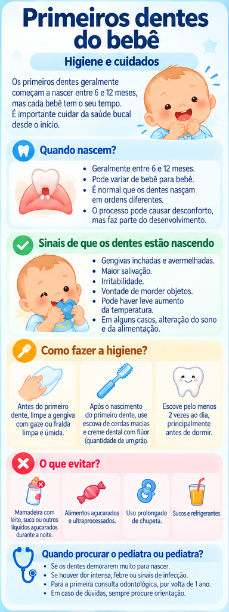

Primeiros dentes do bebê: higiene e cuidados
O nascimento dos primeiros dentes inaugura uma nova etapa de cuidados. A higiene deve começar assim que o primeiro dente aparecer, com rotina simples e adequada à idade.
Quando começar a escovar
A Sociedade Brasileira de Pediatria orienta iniciar a higiene oral regular, pela manhã e à noite, assim que nascer o primeiro dente de leite.
Use escova infantil extra macia e movimentos delicados.
E a pasta com flúor?
A SBP recomenda pequena quantidade de creme dental infantil com flúor, aproximadamente do tamanho de um grão de arroz. Escova e pasta devem ficar fora do alcance do bebê para evitar ingestão indevida.
Primeira consulta odontológica
A consulta com odontopediatra é recomendada quando o primeiro dente nascer ou, no máximo, antes do primeiro aniversário. O acompanhamento permite orientar higiene, alimentação e acompanhar a erupção e o desenvolvimento da boca.
Procure avaliação se...
- Houver trauma no dente ou na boca.
- Aparecerem manchas, cavidades ou alterações persistentes nos dentes/gengivas.
- Houver dor, inchaço, sangramento importante ou dificuldade para comer.
- Existirem dúvidas sobre erupção dentária ou higiene.
Dúvidas frequentes
Preciso esperar vários dentes nascerem para começar a higiene?
Não. A rotina de escovação começa com o primeiro dente.
O pediatra substitui o odontopediatra?
Não. Os cuidados se complementam; a SBP destaca a importância da integração entre pediatra e odontopediatra.
Infográfico

Fontes e revisão
- Sociedade Brasileira de Pediatria. “Cuidados com a saúde oral nos primeiros mil dias de vida”, janeiro de 2026.
- Sociedade Brasileira de Pediatria. Grupo de Trabalho Saúde Oral — Guia de Saúde Oral Materno-Infantil, junho de 2026.
Última revisão: 25 de setembro de 2026.